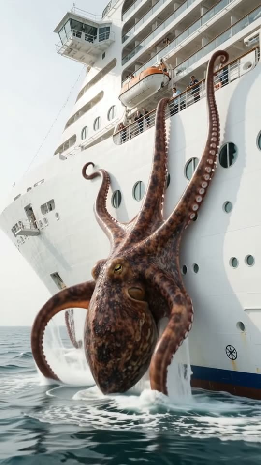
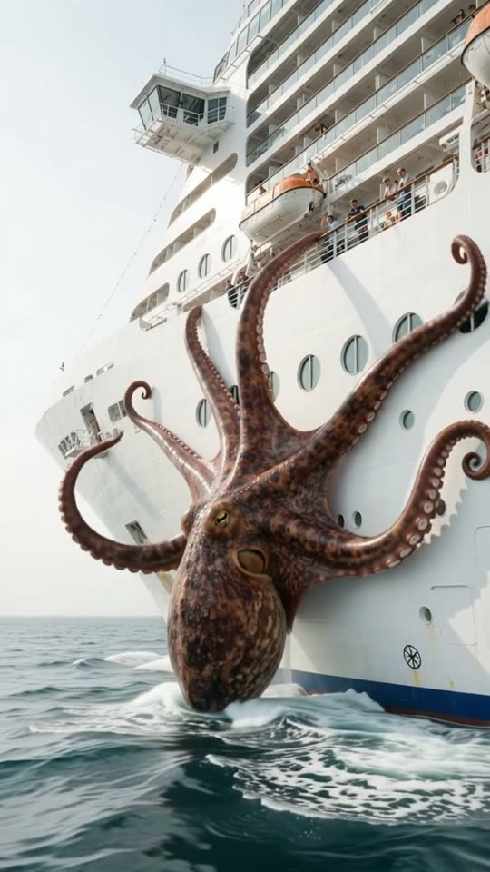
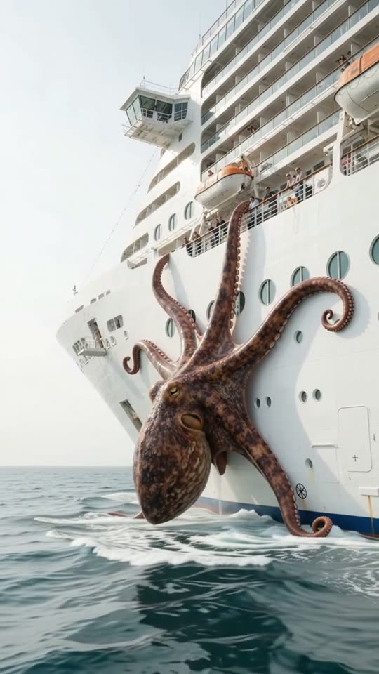

Free prompt pack
One ship.One octopus.
Nobody saw a giant octopus climb a cruise ship. One still image and one prompt that sends it up the hull, deck by deck.
Both prompts, in the order I ran them. Pop the suckers to free each one. Tap the hull for ink.
The first frame
It is already on the hull. This image is frame one: the bow of a white cruise ship from low on the water, and a giant octopus at the waterline with two tentacles already up the steel.
Watch out
Check the edges of your image before the video. A black bar or a dark corner and the video opens on it, then cuts to a cleaner shot.

The prompt 130 words
Real handheld photo taken low over the sea, about sixty metres off the bow of a huge white cruise ship sailing on open water on a bright, hazy day. The ship's bow fills the frame from frame-left to frame-right in three-quarter view, with ten decks of balconies above, orange lifeboats and tiny passengers at the railings; the hull is plain white. At the waterline, right at the bow, a giant real octopus clings to the hull: its reddish-brown mantle, as wide as a bus, rises half out of the white bow wave, glistening wet, with dark mottles and one large golden eye. Two thick tentacles curl up the white hull, rows of pale suckers gripping the steel, water streaming off them. Choppy blue-green sea, white spray. Real photo, natural colour.
The climb
Ten seconds, written second by second. Add the image as the reference, set 10 s, 9:16, 720p and audio on, and paste the prompt whole. If it cuts in the first seconds, trim before the cut: what comes after is the shot.
- 0–2.0 sa third tentacle slaps onto the hull
- 2.0–4.5 sthey slide up past the portholes
- 4.5–7.0 stwo more, up to the balconies
- 7.0–10 sthe longest one reaches the lifeboats
Watch out
Keep the tentacles flat on the steel, suckers stuck, only the tips reaching. Left alone, they curl in the air like decorations.
Fragments



The prompt 1013 words
FORMAT Real handheld video filmed low over the open sea, seen as the finished exported video file: the full picture edge to edge, nothing on top of it. Whatever records the picture is never in frame; nothing in the foreground but water. One continuous take in real time, no cuts. Vertical frame. The video runs at 24 fps. No frame is repeated. Real time, 1x speed, never slow motion. SCENE A huge white cruise ship sails across the open sea, and a giant octopus clinging to its bow at the waterline climbs its hull: one thick tentacle after another rises out of the bow wave, slaps flat onto the white steel and slides upward, deck by deck, until the longest one reaches the lifeboats. The ship keeps sailing. Passengers rush to the railings above. The octopus is already on the hull, with two tentacles up, in the first frame. The take ends with six tentacles spread up the bow and the longest one curled around a railing at lifeboat level. EXACTLY ONE OCTOPUS AND ONE SHIP. REFERENCE IMAGE Use it for the ship, the octopus, the sea and the light. Everything matches it exactly, zero drift, no smoothing. The action is described below. THE OCTOPUS One giant real octopus, its mantle as wide as a bus, its tentacles about thirty metres long. Reddish-brown skin with dark mottles, wet and glistening, wrinkling and stretching as it moves; one large golden eye with a dark slit pupil; thick, muscular tentacles that taper to thin curling tips, with rows of pale round suckers on their undersides. It moves like a real octopus: slow, strong, deliberate. It never looks like rubber, plastic or a toy, and it never lets go. THE SHIP A huge modern white cruise ship, about ten decks of balconies, a bridge with wide wings, a short mast at the bow, a row of orange lifeboats, round portholes low on the hull. The hull is plain white: no name, no letters, no logos. It sails steadily from frame-right toward frame-left with a white bow wave; it never stops, never tilts, never turns. LOCATION MAP The camera is on the water about sixty metres off the ship's bow, low, looking up at it in three-quarter view; it keeps pace with the ship, so the bow stays in the same place in the frame. The bow fills the frame from frame-left to frame-right; the waterline at y 62%; the octopus's mantle at the waterline at x 25-50%; the decks above up to the top of the frame; open sea below and a hazy horizon at frame-left. FIRST FRAME Already moving: the bow in three-quarter view, the waterline at y 62%; the octopus's wet reddish-brown mantle half out of the bow wave at x 25-50%, y 56-66%, its eye visible; two tentacles curled up the white hull to y 40%, suckers gripping; tiny passengers at the top railings; choppy blue-green sea in the bottom third. Instant read: a giant octopus is climbing a cruise ship. No delayed reveal. CAMERA Handheld low over the water, keeping pace with the ship: it rises and falls gently with the waves and tilts up by only about ten degrees over the whole take, following the tentacles. It never flies up like a drone, never circles the ship, never zooms, never cuts. The bow stays in the same place in the frame from the first second to the last. ACTION TIMING 0–2.0 s — A third tentacle bursts up out of the bow wave, streaming water, swings up and slaps flat onto the white hull just frame-right of the first two; its suckers grip the steel. 2.0–4.5 s — The three tentacles slide upward together, one after another, their suckers peeling off and gripping again higher up, past the round portholes; water runs down the hull below them; the mantle heaves a little higher out of the bow wave. 4.5–7.0 s — A fourth and a fifth tentacle climb up to the first rows of balconies; up on the top decks, small passengers rush to the railings and point. 7.0–10 s — A sixth, the longest, reaches the row of orange lifeboats and curls its tip around a railing; the octopus holds on as the ship sails on, the bow wave breaking over its mantle. Hold to the last frame. PHYSICS AND SCALE The octopus is enormous next to the people on the decks: one sucker is the size of a porthole. Its tentacles are heavy and wet: they slap onto the steel with spray, bend around the curve of the bow, and grip; nothing floats. The bow wave breaks white over its mantle and runs off its skin. The ship is far heavier: it does not slow, roll or turn. Nothing morphs: one octopus, one ship. LIGHTING Bright, hazy daylight from frame-left: the white hull glows, the octopus's wet skin shines with highlights, the sea sparkles. No other light. AUDIO No music, no score, no narration, no subtitles. Open sea: wind on the mic, the hiss and roar of the ship's bow wave, the deep hum of its engines, wet heavy slaps of tentacles on steel, the squelch of suckers letting go and gripping again, water pouring down the hull, faint screams and shouts from the decks far above. No clear words. LOOK Real handheld footage, seen as the finished exported file: crisp detail, natural colour, a little haze, slight bob from the waves, no colour grade, no teal-and-orange, no film grain, no lens flare, no slow motion. No camera app interface: no shutter button, no gallery thumbnail, no record button, no icons, no timer, no recording dot, no frame lines. POSITIVE LOCKS Exactly one octopus and one ship; the octopus stays on the bow and its tentacles only climb. The ship keeps sailing. No name, letters or logos on the hull or anywhere in frame. No captions, no subtitles, no on-screen text, no watermark, no camera interface, nothing on top of the picture. ONE SHIP. ONE OCTOPUS. ONE CLIMB. NO CUTS. NO DRONE. NO INTERFACE. NO SLOW MOTION. NO MUSIC.
Rule 01
Start it climbing
Two tentacles on the hull in the first frame. A creature that still has to arrive spends the clip arriving.
Rule 02
Scale with people
Tiny passengers at the railings tell you how big it is. One sucker the size of a porthole does the rest.
Rule 03
Don't name the boat
Say low over the water, not from a small boat, or its bow ends up in your foreground.
That's the whole build
Now go findyour own monster.
If yours works, send it over. I read every DM and the good ones end up on the account.
@martiiifons